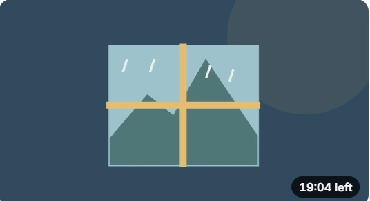
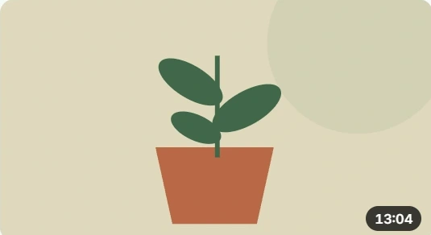

Rain at the cabin
Quiet Evenings
An app for watching YouTube with a feed that ends. Choose what reaches you, set your viewing boundaries, and reflect on what felt worthwhile.
Get started
Bring channels, saved videos and discoveries into a selection with an ending. Watch from your feed, save for later, or leave a video where it is.
You don’t have to watch or sort everything.

Small Garden
Room for what’s next.
Swipe or drag the top card. Buttons work too.
Make room for the rest of your day, with limits and reminders you choose.
Check your remaining time as you watch, and reflect when a video ends if you choose. Time Usage sits in the main navigation.
At the centre on mobile. In the sidebar on desktop.
Move across the graph or tap to inspect. Use arrow keys, Home and End; Escape closes the detail. Time of day advances by one minute, or fifteen with Shift. Line values are smooth interpolations of points. Hourly percentages are average time spent watching within each hour. Time spent shows a trailing thirty-calendar-day average including zero-use days, with ninety illustrative days shown. Worthwhile percentages use the most recent thirty Worth it and Not worth it ratings; Not sure and unrated videos are excluded. Reflection is optional.
See when you watch and how your time changes. If you want, reflect on what felt worthwhile.
Open Villow on your phone, tablet or computer. Your saved videos, settings and viewing activity stay together.
Connect supported browsers to bring your YouTube time into the same picture.
Some apps turn returning and staying longer into the goal. Villow rethinks those patterns around your time, plans and accountability.
Streak at risk · Come back today
Daily streaks can turn returning into a goal of its own. Miss a day, and the count is gone.
Limit decreased · streak kept
A streak for keeping your boundaries. Keep or lower your limits to keep it growing—even on days you don’t watch.
Another video, one click away. Recommendations make it easy to carry on without pausing to decide if you want to.
An optional to-do sidebar keeps your own plans in sight, ready for when you decide to stop.
Send · Post · Repeat
Some apps turn activity into a score for friends to see. More engagement becomes a way to show off.
Choose to let friends see your usage. A reason to think twice about how much you watch, and cut back where you want to.
Some concepts go beyond what an independent app can realistically offer. YouTube’s infrastructure could make them practical at a wider scale, and the same design principles could apply to other social platforms, too.
Explore the design conceptsVillow is a working experiment in redesigning YouTube and social media around the people using them.
Try it, share feedback if you choose, and help improve it. What we learn can inform research and the case for better platform design.